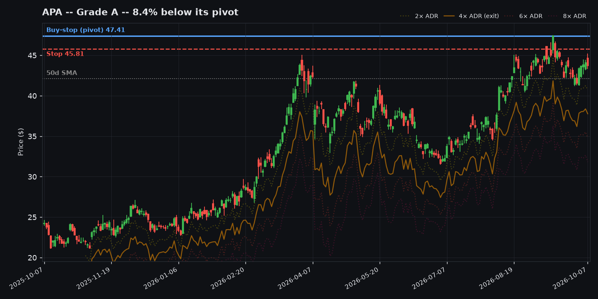

Worth Watching -- Charts
ⓘ Notes
20 tickers as of 2026-10-07, in the same order as the table above. Bars: blue = this ticker, green tick = grinder archetype avg, orange tick = rocket archetype avg. Screener output, not a recommendation.

Information Technology -- Grade A+ -- 9.2% below its pivot
Pivot 35.48 / Stop 33.97 / ADR% 4.3%
Why score +4
- QM setup: the stronger of the two strategies in the backtest (+1)
- Stage 2: not Stage 1 (0)
- 8% below the 52-week high: a real pullback (+1)
- ADR 4.3%: fast enough to run (+1)
- Price $35: under $41, cheaper stocks ran further (+1)
- No shakeout in the last 10 days (0)
Off 52wk high8.4%
Base tightness (10d/50d)0.7x
% above 50-day SMA5.8%
% above 200-day SMA39.4%
ADR%4.3%

Information Technology -- Grade A+ -- 4.8% below its pivot
Pivot 86.31 / Stop 82.60 / ADR% 4.3%
Why score +4
- QM setup: the stronger of the two strategies in the backtest (+1)
- Stage 1: breaking out of a base, early in a new trend (+1)
- 39% below the 52-week high: a real pullback (+1)
- ADR 4.3%: fast enough to run (+1)
- Price $86: $41 or more (0)
- No shakeout in the last 10 days (0)
Off 52wk high38.5%
Base tightness (10d/50d)0.8x
% above 50-day SMA7.5%
% above 200-day SMA1.7%
ADR%4.3%

Information Technology -- Grade A+ -- 3.0% below its pivot
Pivot 168.97 / Stop 161.77 / ADR% 4.3%
Why score +4
- QM setup: the stronger of the two strategies in the backtest (+1)
- Stage 1: breaking out of a base, early in a new trend (+1)
- 36% below the 52-week high: a real pullback (+1)
- ADR 4.3%: fast enough to run (+1)
- Price $169: $41 or more (0)
- No shakeout in the last 10 days (0)
Off 52wk high35.8%
Base tightness (10d/50d)0.8x
% above 50-day SMA6.2%
% above 200-day SMA8.3%
ADR%4.3%

Information Technology -- Grade A -- at its pivot
Pivot 44.90 / Stop 42.66 / ADR% 5.0%
Why score +3
- QM setup: the stronger of the two strategies in the backtest (+1)
- Stage 2: not Stage 1 (0)
- 23% below the 52-week high: a real pullback (+1)
- ADR 5.0%: fast enough to run (+1)
- Price $45: $41 or more (0)
- No shakeout in the last 10 days (0)
Off 52wk high23.4%
Base tightness (10d/50d)0.8x
% above 50-day SMA20.3%
% above 200-day SMA39.6%
ADR%5.0%

Energy -- Grade A -- 8.4% below its pivot
Pivot 47.41 / Stop 45.81 / ADR% 3.4%
Why score +3
- QM setup: the stronger of the two strategies in the backtest (+1)
- Stage 2: not Stage 1 (0)
- 8% below the 52-week high: a real pullback (+1)
- ADR 3.4%: fast enough to run (+1)
- Price $47: $41 or more (0)
- No shakeout in the last 10 days (0)
Off 52wk high7.8%
Base tightness (10d/50d)1.0x
% above 50-day SMA3.9%
% above 200-day SMA23.7%
ADR%3.4%

Health Care -- Grade A -- 6.1% below its pivot
Pivot 69.41 / Stop 67.18 / ADR% 3.2%
Why score +3
- QM setup: the stronger of the two strategies in the backtest (+1)
- Stage 2: not Stage 1 (0)
- 6% below the 52-week high: a real pullback (+1)
- ADR 3.2%: under 3.3% (0)
- Price $69: $41 or more (0)
- Shakeout: dipped under its 20-day low and closed back up, market above its 200-day (+1)
Off 52wk high5.7%
Base tightness (10d/50d)0.8x
% above 50-day SMA1.1%
% above 200-day SMA23.1%
ADR%3.2%

Information Technology -- Grade A -- at its pivot
Pivot 166.68 / Stop 159.80 / ADR% 4.1%
Why score +3
- QM setup: the stronger of the two strategies in the backtest (+1)
- Stage 2: not Stage 1 (0)
- 7% below the 52-week high: a real pullback (+1)
- ADR 4.1%: fast enough to run (+1)
- Price $167: $41 or more (0)
- No shakeout in the last 10 days (0)
Off 52wk high6.9%
Base tightness (10d/50d)0.9x
% above 50-day SMA16.4%
% above 200-day SMA28.7%
ADR%4.1%

Information Technology -- Grade A -- 9.3% below its pivot
Pivot 168.50 / Stop 159.71 / ADR% 5.2%
Why score +3
- QM setup: the stronger of the two strategies in the backtest (+1)
- Stage 2: not Stage 1 (0)
- 53% below the 52-week high: a real pullback (+1)
- ADR 5.2%: fast enough to run (+1)
- Price $168: $41 or more (0)
- No shakeout in the last 10 days (0)
Off 52wk high53.4%
Base tightness (10d/50d)0.9x
% above 50-day SMA20.9%
% above 200-day SMA13.4%
ADR%5.2%

Information Technology -- Grade A -- 5.5% below its pivot
Pivot 206.89 / Stop 199.80 / ADR% 3.4%
Why score +3
- QM setup: the stronger of the two strategies in the backtest (+1)
- Stage 2: not Stage 1 (0)
- 35% below the 52-week high: a real pullback (+1)
- ADR 3.4%: fast enough to run (+1)
- Price $207: $41 or more (0)
- No shakeout in the last 10 days (0)
Off 52wk high35.0%
Base tightness (10d/50d)0.7x
% above 50-day SMA4.7%
% above 200-day SMA9.7%
ADR%3.4%

Communication Services -- Grade A -- 6.3% below its pivot
Pivot 249.87 / Stop 234.50 / ADR% 6.2%
Why score +3
- QM setup: the stronger of the two strategies in the backtest (+1)
- Stage 2: not Stage 1 (0)
- 18% below the 52-week high: a real pullback (+1)
- ADR 6.2%: fast enough to run (+1)
- Price $250: $41 or more (0)
- No shakeout in the last 10 days (0)
Off 52wk high18.0%
Base tightness (10d/50d)0.7x
% above 50-day SMA5.8%
% above 200-day SMA38.1%
ADR%6.2%

Information Technology -- Grade A -- 2.1% below its pivot
Pivot 278.24 / Stop 266.65 / ADR% 4.2%
Why score +3
- QM setup: the stronger of the two strategies in the backtest (+1)
- Stage 2: not Stage 1 (0)
- 5% below the 52-week high: a real pullback (+1)
- ADR 4.2%: fast enough to run (+1)
- Price $278: $41 or more (0)
- No shakeout in the last 10 days (0)
Off 52wk high5.4%
Base tightness (10d/50d)0.8x
% above 50-day SMA10.7%
% above 200-day SMA45.9%
ADR%4.2%

Information Technology -- Grade A -- 1.6% below its pivot
Pivot 287.01 / Stop 274.49 / ADR% 4.4%
Why score +3
- QM setup: the stronger of the two strategies in the backtest (+1)
- Stage 2: not Stage 1 (0)
- 11% below the 52-week high: a real pullback (+1)
- ADR 4.4%: fast enough to run (+1)
- Price $287: $41 or more (0)
- No shakeout in the last 10 days (0)
Off 52wk high10.6%
Base tightness (10d/50d)0.8x
% above 50-day SMA21.6%
% above 200-day SMA66.5%
ADR%4.4%

Information Technology -- Grade A -- 12.2% below its pivot
Pivot 333.20 / Stop 316.63 / ADR% 5.0%
Why score +3
- QM setup: the stronger of the two strategies in the backtest (+1)
- Stage 2: not Stage 1 (0)
- 32% below the 52-week high: a real pullback (+1)
- ADR 5.0%: fast enough to run (+1)
- Price $333: $41 or more (0)
- No shakeout in the last 10 days (0)
Off 52wk high32.5%
Base tightness (10d/50d)0.8x
% above 50-day SMA10.5%
% above 200-day SMA35.7%
ADR%5.0%

Information Technology -- Grade A -- 1.2% below its pivot
Pivot 338.36 / Stop 318.35 / ADR% 5.9%
Why score +3
- QM setup: the stronger of the two strategies in the backtest (+1)
- Stage 2: not Stage 1 (0)
- 22% below the 52-week high: a real pullback (+1)
- ADR 5.9%: fast enough to run (+1)
- Price $338: $41 or more (0)
- No shakeout in the last 10 days (0)
Off 52wk high21.7%
Base tightness (10d/50d)0.8x
% above 50-day SMA10.9%
% above 200-day SMA14.7%
ADR%5.9%

Information Technology -- Grade A -- 6.6% below its pivot
Pivot 347.49 / Stop 334.84 / ADR% 3.6%
Why score +3
- QM setup: the stronger of the two strategies in the backtest (+1)
- Stage 2: not Stage 1 (0)
- 25% below the 52-week high: a real pullback (+1)
- ADR 3.6%: fast enough to run (+1)
- Price $347: $41 or more (0)
- No shakeout in the last 10 days (0)
Off 52wk high24.7%
Base tightness (10d/50d)0.6x
% above 50-day SMA5.6%
% above 200-day SMA17.5%
ADR%3.6%

Information Technology -- Grade A -- 1.7% below its pivot
Pivot 389.80 / Stop 367.07 / ADR% 5.8%
Why score +3
- QM setup: the stronger of the two strategies in the backtest (+1)
- Stage 2: not Stage 1 (0)
- 21% below the 52-week high: a real pullback (+1)
- ADR 5.8%: fast enough to run (+1)
- Price $390: $41 or more (0)
- No shakeout in the last 10 days (0)
Off 52wk high20.7%
Base tightness (10d/50d)0.8x
% above 50-day SMA21.7%
% above 200-day SMA56.5%
ADR%5.8%

Information Technology -- Grade A -- at its pivot
Pivot 445.58 / Stop 419.31 / ADR% 5.9%
Why score +3
- QM setup: the stronger of the two strategies in the backtest (+1)
- Stage 2: not Stage 1 (0)
- 29% below the 52-week high: a real pullback (+1)
- ADR 5.9%: fast enough to run (+1)
- Price $446: $41 or more (0)
- No shakeout in the last 10 days (0)
Off 52wk high29.0%
Base tightness (10d/50d)0.9x
% above 50-day SMA18.1%
% above 200-day SMA12.8%
ADR%5.9%

Information Technology -- Grade A -- 10.0% below its pivot
Pivot 449.04 / Stop 431.18 / ADR% 4.0%
Why score +3
- QM setup: the stronger of the two strategies in the backtest (+1)
- Stage 2: not Stage 1 (0)
- 16% below the 52-week high: a real pullback (+1)
- ADR 4.0%: fast enough to run (+1)
- Price $449: $41 or more (0)
- No shakeout in the last 10 days (0)
Off 52wk high15.6%
Base tightness (10d/50d)0.7x
% above 50-day SMA7.3%
% above 200-day SMA20.6%
ADR%4.0%

Information Technology -- Grade A -- 1.1% below its pivot
Pivot 1097.39 / Stop 1057.76 / ADR% 3.6%
Why score +3
- QM setup: the stronger of the two strategies in the backtest (+1)
- Stage 2: not Stage 1 (0)
- 11% below the 52-week high: a real pullback (+1)
- ADR 3.6%: fast enough to run (+1)
- Price $1097: $41 or more (0)
- No shakeout in the last 10 days (0)
Off 52wk high10.6%
Base tightness (10d/50d)0.7x
% above 50-day SMA12.2%
% above 200-day SMA56.4%
ADR%3.6%

Information Technology -- Grade A -- 4.2% below its pivot
Pivot 1479.89 / Stop 1426.78 / ADR% 3.6%
Why score +3
- QM setup: the stronger of the two strategies in the backtest (+1)
- Stage 2: not Stage 1 (0)
- 16% below the 52-week high: a real pullback (+1)
- ADR 3.6%: fast enough to run (+1)
- Price $1480: $41 or more (0)
- No shakeout in the last 10 days (0)
Off 52wk high15.7%
Base tightness (10d/50d)0.7x
% above 50-day SMA8.3%
% above 200-day SMA10.3%
ADR%3.6%